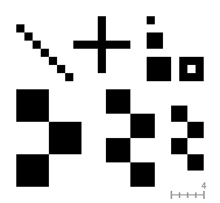
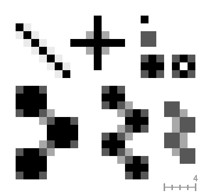

|

|
 |
| 4. Filtros de realce |

|
4.3. Desentrelaçar |
This filter reduces alias effects (see Anti-aliasing) using the Scale3X edge-extrapolation algorithm.
Scale3X é derivado do Scale2x, que é um efeito gráfico para aumentar o tamanho de pequenos bitmaps adivinhando os pixels perdidos sem interpolarpixels e sem desfocar as imagens. [6] O Scale2x foi originalmente desenvolvido para melhorar a qualidade de jogos antigos de fliperama e de Computadores pessoais com uma resolução de vídeo baixa jogados em hardware de vídeo como televisores, monitores de Arcade, monitores de PC e telas de LCD. [7]
The Antialias filter works as follows: for every pixel, the filter expands the original pixel in 9 (3×3) new pixels according to the Scale3X algorithm, using the colors of the pixel and its 8 adjacent pixels (extrapolation); then it subsamples the new pixels to a weighted average pixel.
Os exemplos seguintes ilustram o efeito de alguns padrões. Cadaquadradinho é um pixel (zoom 16:1).

Imagem original (Zoom 16:1)

“Anti-Serrilhamento” aplicado (zoom 16:1)